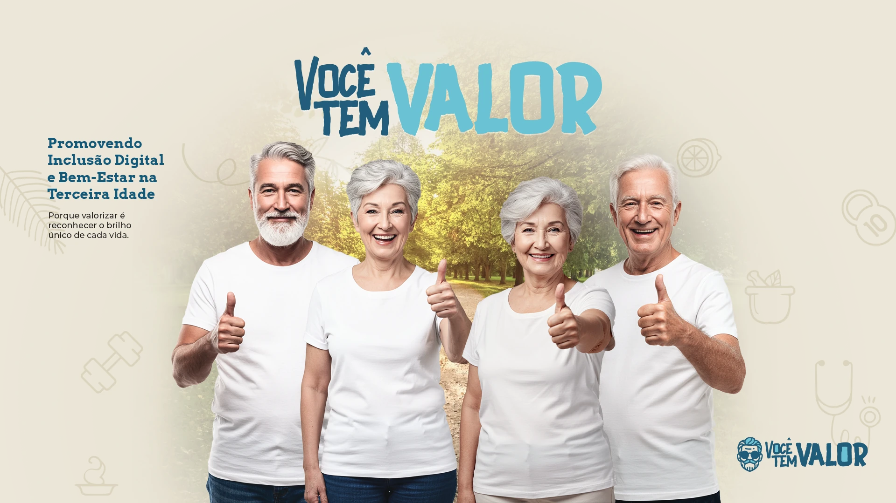
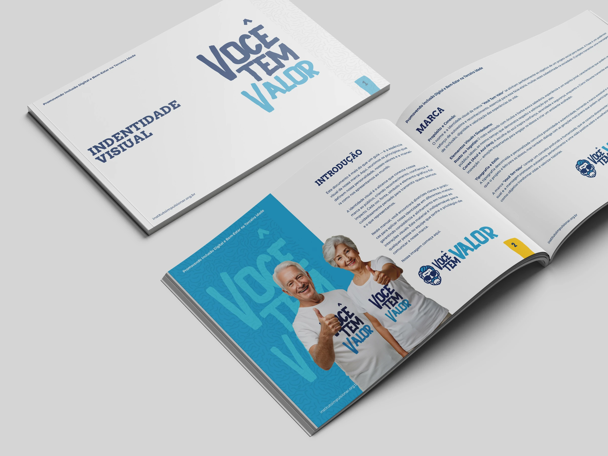
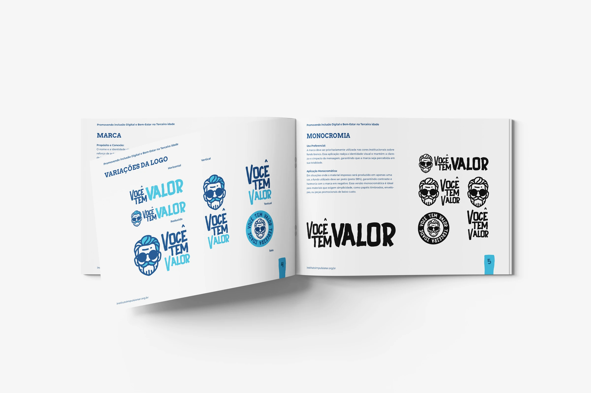
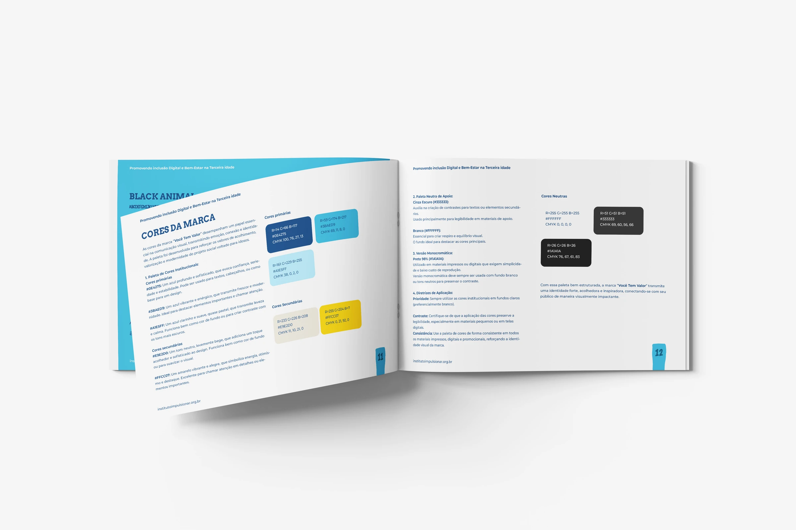
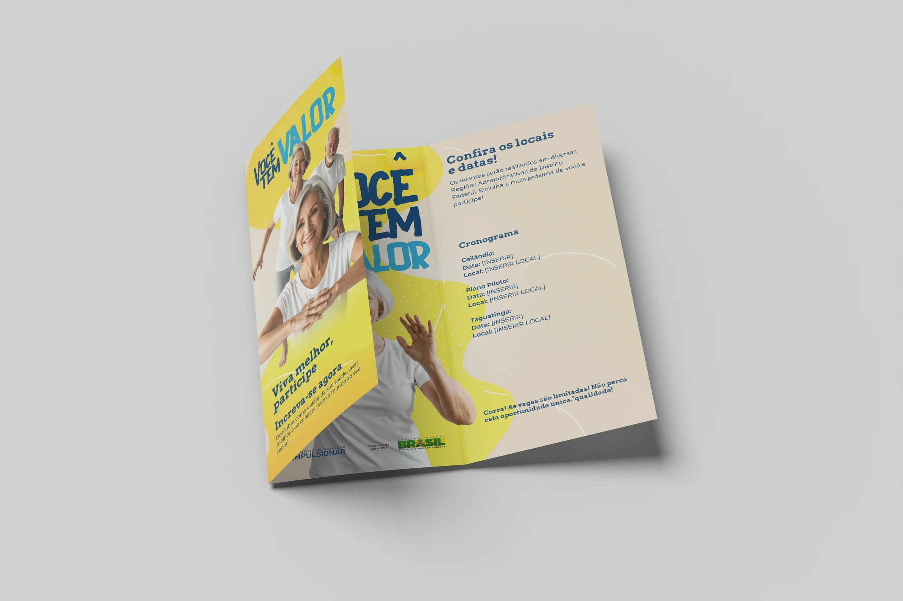
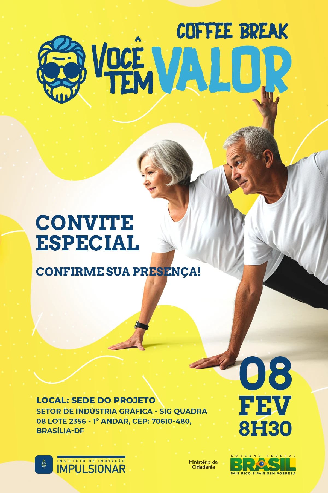
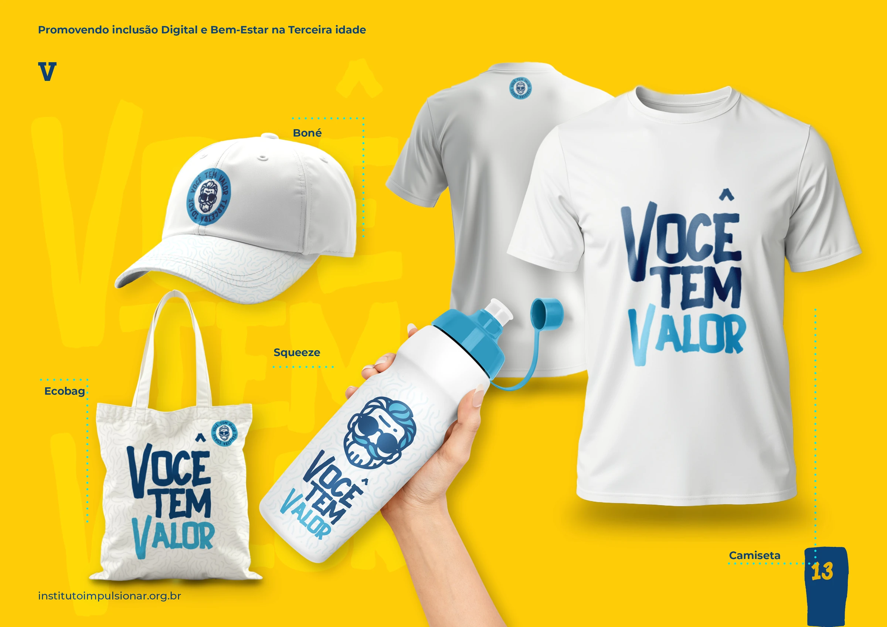

Valorizar histórias.
Aproximar pessoas.
Uma identidade visual para um projeto que conecta inclusão digital, bem-estar e valorização da pessoa idosa. Da marca ao convite, uma linguagem pensada para expressar presença, acolhimento e vitalidade.

Reconhecer o valor
de cada trajetória.
O projeto Você Tem Valor apresenta uma proposta de inclusão digital e bem-estar para a terceira idade. Sua comunicação combina o reconhecimento das histórias de vida com um convite à participação e à convivência.
A identidade reúne uma assinatura expressiva, um personagem de traços marcantes e imagens de pessoas idosas em situações de presença e interação. Nas peças, esses elementos ajudam a construir uma linguagem próxima e positiva.

Expressão própria.
Coerência em cada versão.
O sistema reúne versões horizontais e verticais, uma assinatura textual, o personagem e uma composição em selo. Essa variedade permite ajustar a marca às proporções de materiais impressos, peças digitais e objetos.
O azul escuro dá estrutura à assinatura. Os tons de azul claro, os fundos suaves e o amarelo ampliam a expressão do conjunto. As páginas do manual organizam essas relações e apresentam versões monocromáticas e orientações de cor.

Composições e versões para diferentes usos.

Uma paleta para organizar contraste e expressão.
Uma assinatura
que tem voz.
O desenho expressivo das letras e o personagem dão personalidade à marca e às suas variações.
Cor para orientar
o olhar.
Azuis, amarelo e fundos claros estabelecem relações entre títulos, informações e áreas de destaque.
Um sistema para
acompanhar a ideia.
Assinaturas, selo, padrões e fotografia conectam a comunicação aos materiais de participação.
Um convite
a fazer parte.
A identidade se desdobra em um folheto com duas dobras e em uma peça de convite para WhatsApp. Fotografia, títulos expressivos e áreas de informação organizam o percurso entre conhecer a proposta e reconhecer como participar.
O folheto apresenta a iniciativa e distribui os conteúdos em painéis. O convite concentra a chamada, a data e as informações do encontro. As imagens registram as peças do projeto.

A proposta distribuída em uma peça impressa.

A mesma identidade em uma peça para WhatsApp.
Uma marca que
acompanha as pessoas.
Camiseta, boné, ecobag e garrafa levam a identidade para outros pontos de contato. As aplicações alternam a assinatura textual, o personagem e o selo, mantendo a relação entre os elementos do sistema.
O padrão gráfico aparece como um recurso de continuidade em superfícies claras. Os mockups permitem observar a adaptação da marca entre comunicação, vestuário e objetos.
